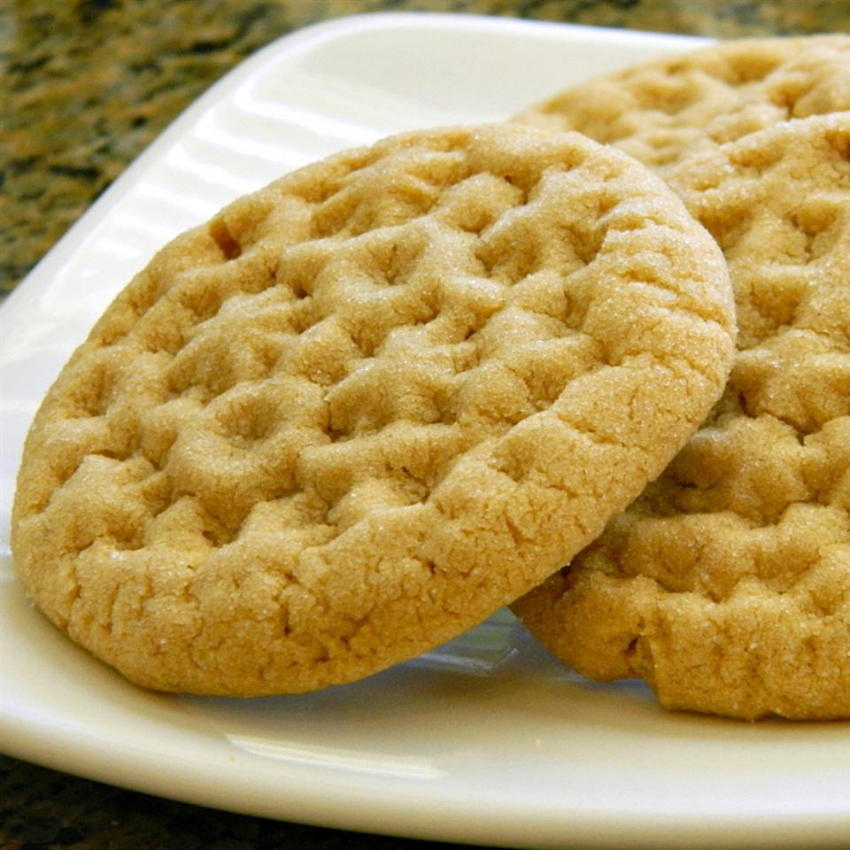

Cookie Butter Cookie

The best cookie you will ever have!
This cookie will knock your socks off and show you a good time. It is so delicious and chewy good.
This is the only cookie I will ever eat.
Ingredients
- 3/4 cup softened butter
- 3/4 cup brown sugar
- 3/4 cup white sugar
- 1/2 cup cookie butter
- 1/2 cup peanut butter
- 2 cups all-purpose flour
- 1 egg
- 1/2 teaspoon baking soda
- 1/2 teaspoon baking powder
- 1/4 teaspoon salt
- 1/3 cup white sugar (yes 2 time)
Directions
- Preheat the oven to 350 degrees F (175 degrees C). Line a baking sheet with parchment paper.
- Beat butter, brown sugar, and 3/4 cup white sugar with an electric mixer in a large bowl until smooth. Add cookie butter and peanut butter; beat until fluffy. Mix flour, egg, baking soda, baking powder, and salt into butter mixture until dough comes together. Roll dough into teaspoon-size balls.
- Spread 1/3 cup sugar into a shallow dish. Roll dough balls in sugar to coat and arrange onto the prepared baking sheet. Press the top of dough balls twice with a fork in a crosshatch shape.
- Bake in the preheated oven until golden brown, about 12 minutes.